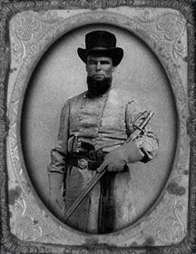

|

NAME: John Hamilton Skelton
BORN: 1827
DIED: 1893
ALLEGIANCE: Confederate
HIGHEST RANK: Major
UNIT: 16th Infantry Regiment, Georgia Volunteers, Company
C, "Hartwell Infantry"
RECORD: Formed and commanded Company C on July
13, 1861. Regimental commander as of November 1863. Fought
at Yorktown, Lee's Mill, Seven Days, South Mountain,
Antietam, Fredericksburg, Chancellorsville, Gettysburg,
Chattanooga, Knoxville, Wilderness, Spotsylvania, Cold
Harbor and Petersburg.
|
|
John Hamilton Skelton was born in 1827 in what was then
Elbert County, Georgia, but is now Hart County. His parents
were Jabez and Julia Davis Skelton, and his grandparents
were John and Rebecca Harbour Skelton, all of Hart County.
He studied law in the office of a Judge Rice and his
brother, James E. Skelton, in Marietta, Georgia. After
finishing his studies in 1858, he practiced in Hartwell,
Georgia, for three years.
He was secretary of the Hart County Convention that
elected and sent delegates to the State Convention in
Milledgeville in January 1861. It was at this convention
that the Ordinance of Secession from the Union was signed.
His brother James was one of the two signatories from Hart
County.
On July 13, 1861, John formed Company C of the 16th
Georgia Infantry and became its first captain and commander.
Made up of men from Hartwell, the unit became known as the
"Hartwell Infantry." The regiment was sent to Virginia in
the spring of 1862 during the Peninsula campaign and joined
the Army of Northern Virginia during the Seven Days' battles
as part of Brig. Gen. Howell Cobb's Brigade in Magruder's
Division. By the Battle of Fredericksburg in December 1862,
the 16th Georgia was part of McLaws' Division in Lt. Gen.
James Longstreet's First Corps. John was captured at
Fredericksburg and paroled for exchange 13 days later.
At Gettysburg McLaws' Division was part of the bloody
fighting in the Peach Orchard and the Wheatfield on July 2,
1863. After Hood's Division delivered the initial blow,
McLaws' Division moved forward en echelon around 5 p.m. The
16th Georgia was part of Brig. Gen. William T. Wofford's
Brigade and acted as a second attack wave behind the
brigades of Brig. Gens. William Barksdale and Joseph
Kershaw.
Promoted to major, John took command of the regiment in
November 1863. His brother Wiley was promoted to captain.
The 16th Georgia went west with Longstreet when Robert E.
Lee sent him to assist in that theater. It took part in the
sieges at Chattanooga and Knoxville, but was not engaged at
Chickamauga.
By the beginning of the Overland campaign in May 1864,
the 16th Georgia was back in Virginia. John was captured
again near New Market in August 1864. He was sent to the Old
Capitol Prison in Washington, D.C., then to Fort Delaware
Prison outside Delaware City, Del. He was released in July
1865 by presidential order.
After returning home from the war, he married and had 10
children, seven boys and three girls. In 1867 he represented
Hart County at the State Constitutional Convention, and
served as a reading clerk in the state legislature for two
terms. He was solicitor of Hart County Court from 1865 until
several years later when the court was abolished, and also
served as the mayor of Hartwell from 1868-70. In 1888-89 he
was a state representative from Hart County.
John Skelton died in 1893 at the age of 66 after
suffering from several illnesses for a number of years. The
minister of the Hartwell First Baptist Church officiated at
his funeral. The Superior Court was adjourned, and officers
of the court attended. Pallbearers were selected from the
lawyers in attendance, all of whom had been John's personal
and professional friends.
Source: Civil War Times Illustrated
45:5 (July 2006), 8.
|